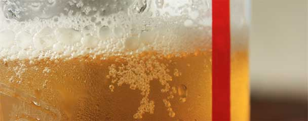

QCafé
Hours of Operation
- Monday
- 8am – 12pm
- Tuesday
- 8am – 12pm
- Wendesday
- 8am – 12pm
- Thursday
- 8am – 12pm
- Friday
- 8am – 2pm
- Saturday
- 8am – 2pm
- Sunday
- 8am – 10pm
Happy Hour
- Tuesday
- 12pm – 4pm
- Thursday
- 12pm – 4pm
A happy hour menu can be found here
A Convenient Location for some Great Food
On behalf of the entire dining services team, I am delighted to welcome you to Queens College for the 2017-2018 academic year. We are looking forward to the exciting year ahead!
We feel that we have one of the finest dining programs around, with great food and plenty of special events, innovative promotions, and fun.
Queens College Dining Services is committed to providing quality food and excellent service. Our guarantee to you is that we will do everything possible to ensure your satisfaction. If you have any comments, concerns, suggestions, or praise about your dining experience, or need any special assistance, please let us know. Simply speak with a dining services manager, send us an email, or fill out a comment card available in all of our dining locations.
Beer of The Month - Brother Benedict's Bock
The traditional German bock emphasizes medium to strong malty flavor. While some hoppiness can be detectable, it should be minimal in the taste and aroma. A bock beer has a firm caramel body, clean finish, deep copper to dark brown color, and be medium to full-bodied.
Testimonials
Somebody ask me if I wanted to grab a quick bite and it was the closest option.
- Maurice (Senior) Maurice
I guess the food is edible
- Jacqueline (Junior) Jacqueline
Sometimes the Halal stand is just too far away.
- Mark (Freshmen) Mark